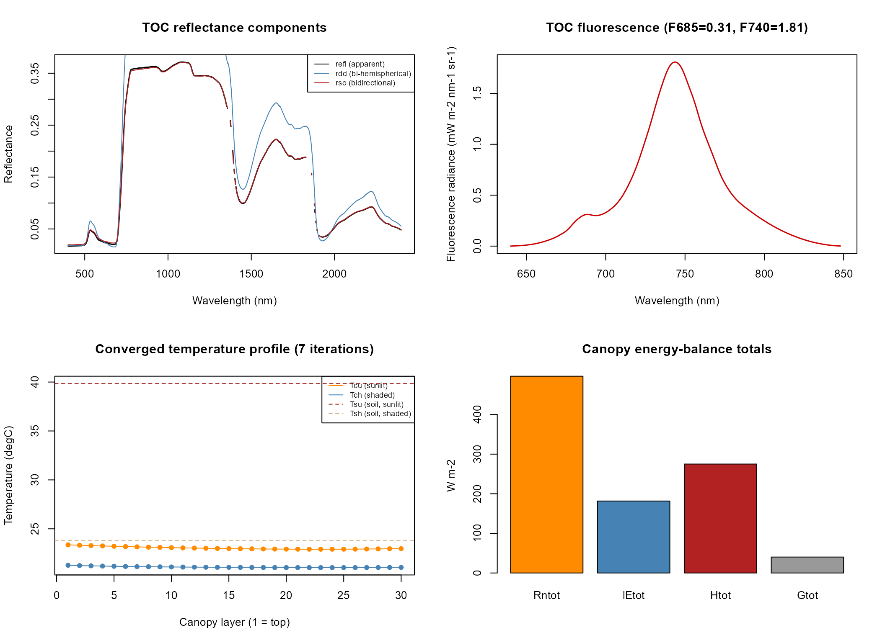

01. Getting Started with SCOPEinR
01-getting-started.RmdSCOPEinR is a full R port of SCOPE 2.0 (Soil Canopy
Observation, Photochemistry and Energy fluxes, van der Tol et al. 2009;
Yang et al. 2021) – it couples soil reflectance, canopy optical BRDF,
leaf photosynthesis, and a full energy-balance closure loop into one
simulation. ToolsRTM’s series (this site’s other tutorial
set) covers leaf/canopy radiative transfer alone; this series covers
what SCOPE adds on top: energy balance, fluorescence, and
photosynthesis, all coupled together.
Leaf/canopy/soil/meteo inputs (one LUT row)
|
v
Fluspect-Cx + fourSAIL (optical BRDF)
|
v
Energy balance solve
(leaf/soil temperature, iterative)
|
+-------+-------+
| |
v v
TOC reflectance Fluorescence (SIF)
| |
+-------+-------+
|
v
Photosynthesis (Actot)1. Run one full SCOPE simulation
table.with.opts <- read.table(system.file("input", "setoptions.csv", package = "SCOPEinR"),
header = TRUE, sep = ",")
Table.LUT <- read.table(system.file("input", "LUT_input.csv", package = "SCOPEinR"),
header = TRUE, sep = ",")
invisible(capture.output(
db.sim <- SCOPEinR::get.SCOPE(
LUT = Table.LUT[1, ],
options.SCOPE = table.with.opts,
optipar = SCOPEinR::optipar2021.Pro.CX,
leaf.model = "fluspect-CX",
canopy.model = "fourSAIL",
get.outputs = "ALL",
get.plots = FALSE
)
))
res <- db.sim[[1]] # get.SCOPE() always returns a list-of-results, even for one LUT row
cat("Canopy layers:", res$data.canopy$nlayers, "\n")
#> Canopy layers: 30
cat("TOC reflectance at 550nm:", round(res$data.rad$refl[550 - 400 + 1], 4), "\n")
#> TOC reflectance at 550nm: 0.0438
cat("TOC reflectance at 800nm:", round(res$data.rad$refl[800 - 400 + 1], 4), "\n")
#> TOC reflectance at 800nm: 0.3588
cat("Canopy-average leaf temperature (Tcave):", round(res$data.fluxes$Tcave, 2), "degC\n")
#> Canopy-average leaf temperature (Tcave): 22.04 degC
cat("Net radiation, total (Rntot):", round(res$data.fluxes$Rntot, 1), "W/m2\n")
#> Net radiation, total (Rntot): 496.7 W/m2
cat("Canopy photosynthesis (Actot):", round(res$data.fluxes$Actot, 2), "umol m-2 s-1\n")
#> Canopy photosynthesis (Actot): 19.89 umol m-2 s-1
cat("Canopy fluorescence flux (EoutF):", round(res$data.rad$EoutF, 4), "W/m2\n")
#> Canopy fluorescence flux (EoutF): 0.3889 W/m2A note on get.SCOPE()’s return
structure: unlike foursail() (Tutorial 01 of the
ToolsRTM series, a flat list(rdot=, rsot=)),
get.SCOPE() returns SCOPE’s own internal nested-list
structure directly – data.rad, data.thermal,
data.fluxes, data.canopy,
data.spectral, iter.ebal, … 19 top-level
fields. This is deliberate: it’s exactly what the original MATLAB SCOPE
model produces, so it stays directly comparable to SCOPE documentation
and literature.
| What you want | Where it is |
|---|---|
| TOC reflectance (full spectrum) | res$data.rad$refl |
| Bi-hemispherical / directional components |
res$data.rad$rdd / rsd / rdo
/ rso
|
| Wavelength grid |
res$data.spectral$wlS (400-2400nm @ 1nm, then coarser
to 50000nm) |
| Fluorescence spectrum |
res$data.rad$LoF_, on
res$data.spectral$wlF (640-850nm @ 1nm) |
| Sunlit/shaded leaf temperature per layer |
res$data.thermal$Tcu / Tch
|
| Soil temperature |
res$data.thermal$Tsu / Tsh
|
| Energy-balance totals |
res$data.fluxes$Rntot / lEtot /
Htot / Gtot
|
| Photosynthesis | res$data.fluxes$Actot |
| Solver convergence |
res$iter.ebal$counter (iterations to converge) |
2. Four views of the same simulation
wl_optical <- 400:2400 # the uniform-1nm part of data.spectral$wlS
n <- length(wl_optical)
op <- par(mfrow = c(2, 2))
plot(wl_optical, res$data.rad$refl[1:n], type = "l", col = "black", lwd = 1.5,
xlab = "Wavelength (nm)", ylab = "Reflectance", main = "TOC reflectance components")
lines(wl_optical, res$data.rad$rdd[1:n], col = "steelblue")
lines(wl_optical, res$data.rad$rso[1:n], col = "firebrick")
legend("topright", c("refl (apparent)", "rdd (bi-hemispherical)", "rso (bidirectional)"),
col = c("black", "steelblue", "firebrick"), lty = 1, cex = 0.7)
wlF <- res$data.spectral$wlF
plot(wlF, res$data.rad$LoF_, type = "l", col = "red3", lwd = 1.5,
xlab = "Wavelength (nm)", ylab = "Fluorescence radiance (mW m-2 nm-1 sr-1)",
main = sprintf("TOC fluorescence (F685=%.2f, F740=%.2f)", res$data.rad$F685, res$data.rad$F740))
layers <- seq_len(res$data.canopy$nlayers)
plot(layers, res$data.thermal$Tcu, type = "o", pch = 16, col = "darkorange",
ylim = range(c(res$data.thermal$Tcu, res$data.thermal$Tch, res$data.thermal$Tsu, res$data.thermal$Tsh)),
xlab = "Canopy layer (1 = top)", ylab = "Temperature (degC)",
main = sprintf("Converged temperature profile (%d iterations)", res$iter.ebal$counter))
lines(layers, res$data.thermal$Tch, type = "o", pch = 16, col = "steelblue")
abline(h = res$data.thermal$Tsu, col = "brown", lty = 2)
abline(h = res$data.thermal$Tsh, col = "tan", lty = 2)
legend("topright", c("Tcu (sunlit)", "Tch (shaded)", "Tsu (soil, sunlit)", "Tsh (soil, shaded)"),
col = c("darkorange", "steelblue", "brown", "tan"), lty = c(1, 1, 2, 2), cex = 0.7)
fluxes <- c(Rntot = res$data.fluxes$Rntot, lEtot = res$data.fluxes$lEtot,
Htot = res$data.fluxes$Htot, Gtot = res$data.fluxes$Gtot)
barplot(fluxes, col = c("darkorange", "steelblue", "firebrick", "grey60"),
ylab = "W m-2", main = "Canopy energy-balance totals")
par(op)Reflectance, fluorescence, the converged temperature profile, and
where the absorbed energy actually goes – all from one
get.SCOPE() call. Tutorials 02-04 look at each of these in
more depth; Tutorial 05 onward builds LUTs and runs many simulations at
once.